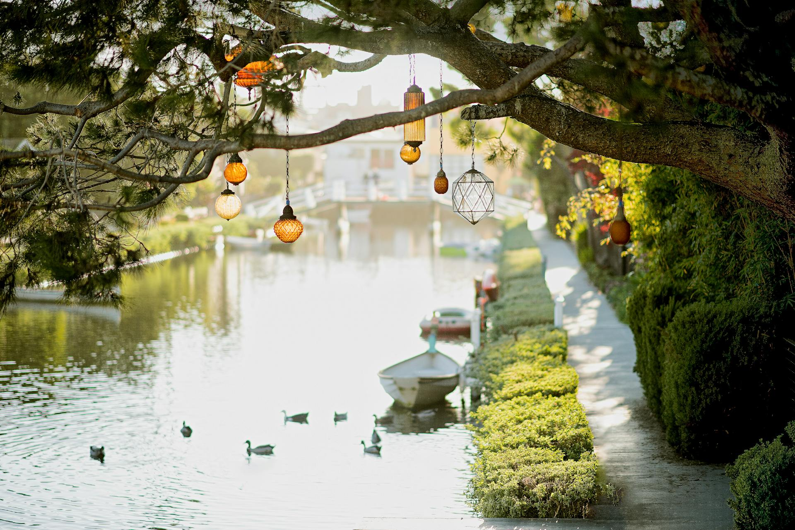

A canoa é uma embarcação tradicional usada há séculos para transporte e lazer. Feita geralmente de madeira, mas também em materiais modernos como fibra de vidro, a canoa é leve e fácil de manobrar. Ideal para explorar rios, lagos e até mesmo o mar calmo, proporciona uma experiência íntima com a natureza. Em muitos lugares, é utilizada em competições e atividades recreativas. A prática de canoagem pode ser tanto relaxante quanto desafiadora, dependendo do ambiente e das condições.
Ir para algum lugar
As raízes de árvores fortes desempenham um papel crucial na estabilidade e saúde das árvores. Elas se estendem profundamente no solo, ancorando a árvore e absorvendo nutrientes e água essenciais. Essas raízes também ajudam a prevenir a erosão do solo, contribuindo para a integridade do ecossistema. Em muitos casos, a robustez das raízes é um indicador da longevidade da árvore. Além de sua função ecológica, raízes fortes também servem de habitat para várias espécies de fauna e flora.
Ir para algum lugarO lago limpo e lindo é um refúgio de tranquilidade e beleza natural. Suas águas cristalinas refletem o céu e a vegetação ao redor, criando uma paisagem serena. É o local ideal para atividades relaxantes, como passeios de barco e piqueniques à beira d'água. A fauna aquática que habita o lago contribui para a diversidade e equilíbrio ecológico da região. Muitas vezes, lagos assim são preservados como áreas de proteção ambiental, garantindo que sua beleza e pureza sejam mantidas para as futuras gerações.
Ir para algum lugar